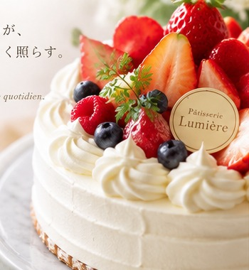

素材の表情を活かす
果実、カカオ、バター。それぞれの香りや食感が引き立つ組み合わせを大切に。
OUR STORY
大切な人との時間を、少しだけ特別にする。ルミエールが目指すお菓子づくりをご紹介します。
パティスリー・ルミエールは、 「大切な人との時間を少しだけ特別にする」 そんなお菓子を目指す小さな洋菓子店です。
素材の香り、口どけ、甘さの余韻。 一つひとつのバランスを大切にしながら、 毎日店内で丁寧に仕上げています。

A LITTLE HAPPINESS
果実の香り、生クリームの軽やかさ、焼き菓子の香ばしさ。ひと口ごとに素材の表情が感じられるように、味わいのバランスを考えます。
誰かと分け合う日も、自分のために選ぶ日も。お菓子を囲むひとときに、やさしい彩りを添えられたら。
果実、カカオ、バター。それぞれの香りや食感が引き立つ組み合わせを大切に。
お菓子を選ぶ時間から季節を感じられる、彩り豊かなショーケースをイメージしています。
ごあいさつ、記念日、日々のお礼。さまざまな気持ちを託したくなるお菓子を。
ケーキやギフトの相談方法、店舗のご案内はこちらから。
店舗案内・お問い合わせ